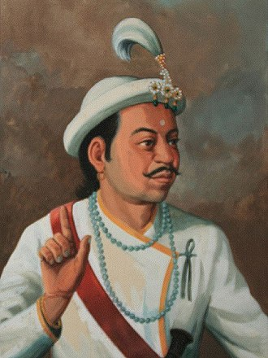
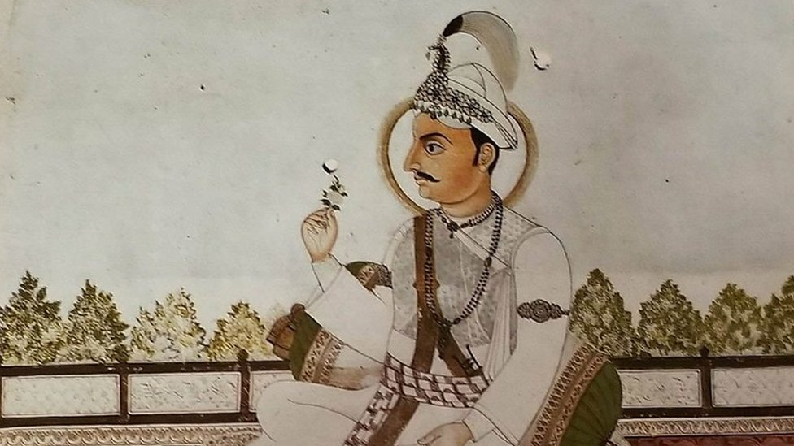
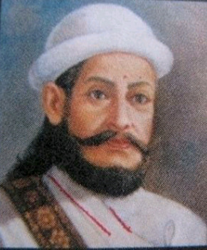
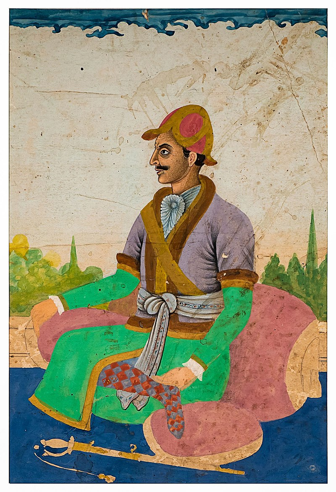

- Ram Shah

Ram Shah (Nepali: राम शाह; reign before 1606 – 1636) was a king of the
Gorkha Kingdom (present-day Gorkha District, Nepal). He was the son of
Gorkha king Purna Shah and brother of Chatra Shah. He acceded to the
throne c. 1606 after his brother's death. He expanded his kingdom as far
as the Trishuli River to the east, the Marshyangdi to the west, the
Rasuwa to the north, and the Mahabharat Range to the west.
- Prithivi Narayan Shah

Prithvi Narayan Shah[5] (Nepali: श्री ५ बडामहाराजाधिराज पृथ्वीनारायण शाह
देव, romanized: Shri Panch Badamaharajadhiraj Prithvi Narayan Shah Dev;
11 January 1723 – 11 January 1775), was the last king of the Gorkha
Kingdom and first king of the Kingdom of Nepal (also called the Kingdom
of Gorkha). Prithvi Narayan Shah started the unification of Nepal.
- Amar Singh Thapa

Amar Singh Thapa distinguished as Badakaji Amar Singh Thapa[note
1](Nepali: बडाकाजी अमर सिंह थापा), or Amar Singh Thapa The Elder,[2]
(also spelled Ambar Simha[3]) also known by the honorific name Bada Kaji
("Senior Kaji") or Budha Kaji[4] ("The Old Kaji"), was a Gorkhali
military general, governor and warlord in the Kingdom of Nepal. He was
the overall commander of the Nepal Army in the conquest of Western
Provinces and authoritative ruler of Kumaon, Garhwal in the Kingdom of
Nepal. He was referred by the King of Nepal to have been deployed as
Mukhtiyar (equivalent to Prime Minister) of Western Provinces of Kumaon,
Garhwal.
- Bhimsen Thapa

Bhimsen Thapa (Nepali: भीमसेन थापाlistenⓘ (August 1775 – 29 July 1839))
was a Nepalese statesman who served as the Mukhtiyar[note 1] (equivalent
to prime minister) and de facto ruler of Nepal[4] from 1806 to 1837.[5]
He is widely known as the longest-serving prime minister of Nepal and
was inducted into the "National heroes of Nepal" by King Mahendra Bir
Bikram Shah.